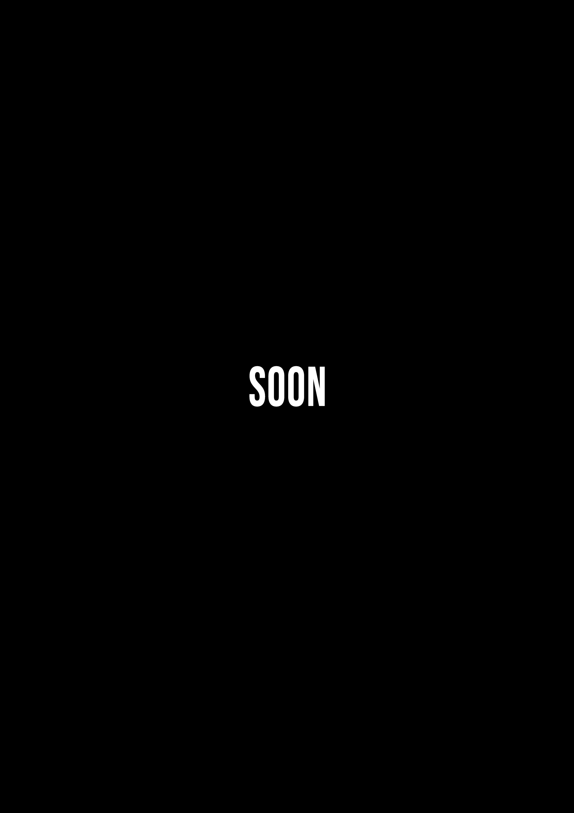

LINE-UP

UNDEAD
Death Metal - Spain


Making their absolute debut in Portugal, Undead is one of the biggest names in Spanish Death Metal. Visceral and brutal death metal, with modern and aggressive production, Undead brings a unique energy to their shows.

WET CACTUS
Stoner Rock - Spain
The legendary Wet Cactus is one of the leading exponents of Spanish Stoner Rock. With heavy riffs and captivating grooves, Wet Cactus brings massive energy to the Bajonca stage. Influences range from 70s psychedelic rock to modern stoner, delivering an intense and engaging performance.
FOSCOR
Post Black Metal - Spain
Returning to Portugal, the historic Spanish black metal band comes to celebrate the 25th anniversary of their first release with a very special set that promises to be an intense journey through their early releases. With a sound that blends the aggressiveness of black metal with melancholic and progressive atmospheres, this concert will be historic.

SPEEDEMON
Heavy/Speed/Thrash - Portugal
Speedemon needs no introduction in Portugal. The band, which has already represented the country at Wacken, brings along the acclaimed Fall Of Man. With a sound that blends elements of heavy, speed, and thrash metal, Speedemon is a band that promises a concert full of energy and attitude. With fast and powerful riffs, electrifying guitar solos, and an energetic performance, Speedemon will make the audience vibrate from start to finish.


BESTA
Grindcore - Portugal
Reducing Besta to the label of Grindcore is, in reality, a huge injustice to what the band delivers on stage. With a sound that mixes elements of grindcore, death metal, and hardcore, the band is a BEAST on stage with fast and powerful riffs, aggressive vocals, and an energetic performance. Besta will make the audience vibrate from start to finish.

LÓSTREGOS
Pagan Black Metal - Spain
The Galician band Lóstregos is a gem of Spanish and international pagan black metal, with sounds ranging from seminal Black Metal to melodic and even atmospheric. The band’s concert is an intense and immersive journey through soundscapes that evoke nature, mythology, and the history of Galicia. With a captivating stage presence and a unique sound, the band’s concert will be an unforgettable experience for genre enthusiasts and for anyone who appreciates intense and emotional music.
CRUZEIRO
Stoner/Doom - Spain
The Galician band Cruzeiro is one of the biggest revelations in Spanish stoner doom in recent years. With a sound that mixes heavy riffs and dense atmospheres, Cruzeiro brings a unique energy to the Bajonca stage. Influenced by everything from classic doom to modern stoner, Cruzeiro delivers an intense and immersive performance.

MURMUR
Post Black/Doom/Death - Spain
For the first time in Portugal! Murmur is the new big revelation of Spanish post black/doom/death. With a dense and atmospheric approach, the mix of black, doom, and death creates a chilling and corrosive experience. Melancholy and brutality coexist masterfully, creating a concert that promises to be an intense and emotional journey through dark and immersive soundscapes.


JARDA
Thrash N' Roll - Portugal
JARDA NATION!!! Headbanging thrash n' roll, supreme speed, and riffs that never rest. Massive doses of energy and attitude, Jarda promises adrenaline and fun from start to finish, with a performance that will make the audience vibrate and sing in unison. Maximum cowboy madness!

RAGEFUL
Death Metal - Portugal
When Rageful takes the stage, the audience’s blood boils! With a mix of Old School and modern Death Metal, Rageful brings brutal energy and impressive technique that will not leave metal fans indifferent. With heavy riffs, aggressive vocals, and an intense stage presence, Rageful promises to blow up the Bajonca stage.
EL SAGUARO
Stoner/Blues Rock - Portugal
El Saguaro’s psychedelic and stoner rock is a pleasant journey through desert soundscapes, with heavy riffs and hypnotic grooves that evoke the vastness and mystique of the American Southwest. This Portuguese trio is one of the biggest revelations in national stoner/blues rock in recent years.

DANGER MACHINE
Heavy/Speed - Portugal
Danger Machine is rebellion, a cult to the lord of darkness, and a heavy/speed metal machine that never stops accelerating. Speed and irreverence are what this young band from Alentejo will bring to the Bajonca stage.


SPIRAL SPUTNIK
Rock - Portugal
Spiral Sputnik is playing at home! A recently formed band but already with an acclaimed album, "Noir Déluge," which is a journey through denser rock, with hints of grunge and punk rock and even a touch of doom. This quartet from Viseu is ready to conquer big stages! We are privileged and proud to host them.
SCHEDULE
Info available soon.
ART MARKET
Info available soon.
DIRECTIONS
INFO
- Date: July 10–11, 2026
- Location: Valadares, São Pedro do Sul, Viseu, Portugal
- Entry: Free
- Camping: Free with hot shower facilities, available from July 9–12
- The festival grounds are shaded, thanks to many trees.
- The space is wide and privileged, with a unique view of the surrounding mountains, providing a natural and relaxing environment for festival-goers.
- There will be merch, food, and drink stalls, and a chill-out area for resting between concerts.
- We will have an art market with artists exhibiting and selling their works.
- Payments at festival stalls are accepted via card, MBWay, and cash.
Questions or more information? Contact us via the official email: bajonca.acr@gmail.com
More info available soon .
PARTNERS
Info available soon .
LAST EDITIONS


SOBRE NOSOTROS
Bajonca - Cultural and Recreational Association is a non-profit organization, founded in 2021 by a group of friends passionate about music and alternative culture.
Our goal is to create a space for gathering and celebrating music, art, and culture, promoting events that value diversity and creativity.
We believe music is a powerful form of expression and connection, and we aim to provide unique and memorable experiences for our audience.
Join us!
Institutional email: bajonca.acr@gmail.com
Booking email: bajonca.booking@gmail.com